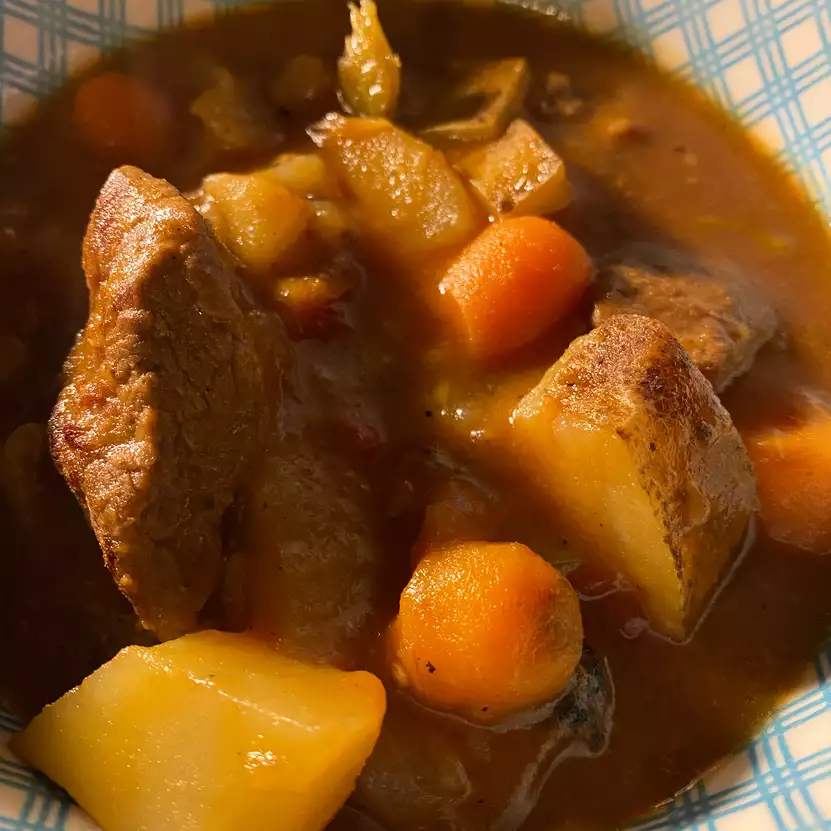

Beef Stew

Discription
simple and hearty beef stew you can prepare for your family
ingredients
- 3 tablespoons vegetable oil
- 2 pounds room temperature beef stew meat,cut into 11/2-inch
- 1/2 cup all-purpose flour
- 1 yellow onion,roughly chopped
- 1 teaspoon miced garlic
- 1(32 ounced)carton low -sodium beef broth
- 1(15 ounced)can crushed tomatoes
- 3 yellow potatoes,or more to taste,cubed
- 3 stalks celery,chopped
- 1 cup baby carrots
- 1 teaspoon creole seasoning
- 1 teaspoon dried basil
Steps
- Heat oil in a large pot over medium-high heat.Add meat,flour,onion and garlic;cook and stir until browned 10 to 15 minutes.
- Add broth,tomatoes,potatoes,celery and carrots,then stir in creole seasoning and basil.Bring to a simmer.Reduce heat to maintain simmer and cook,uncoverd until potatoes are soft,meat is tender and gravy is thick about 1 hour